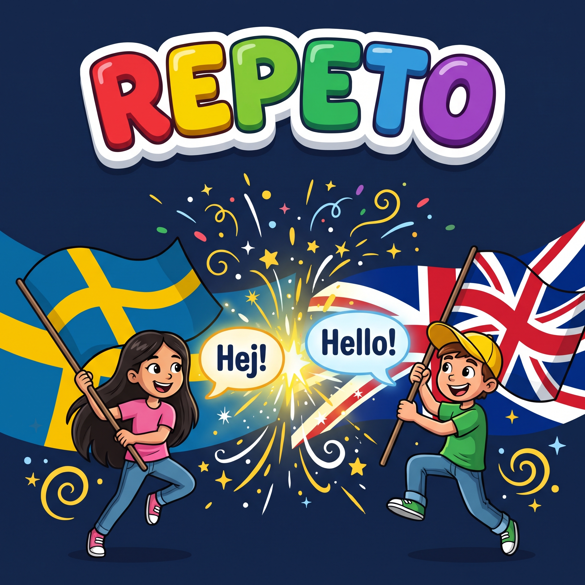
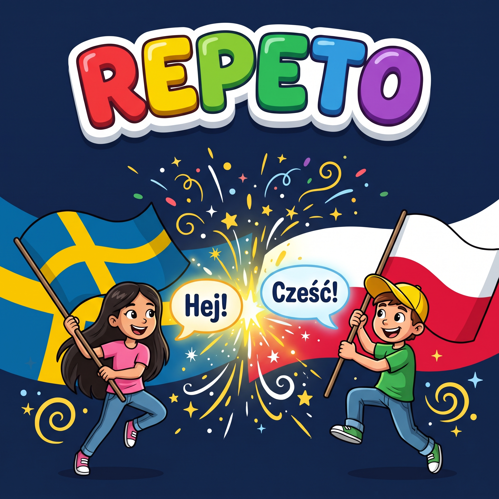
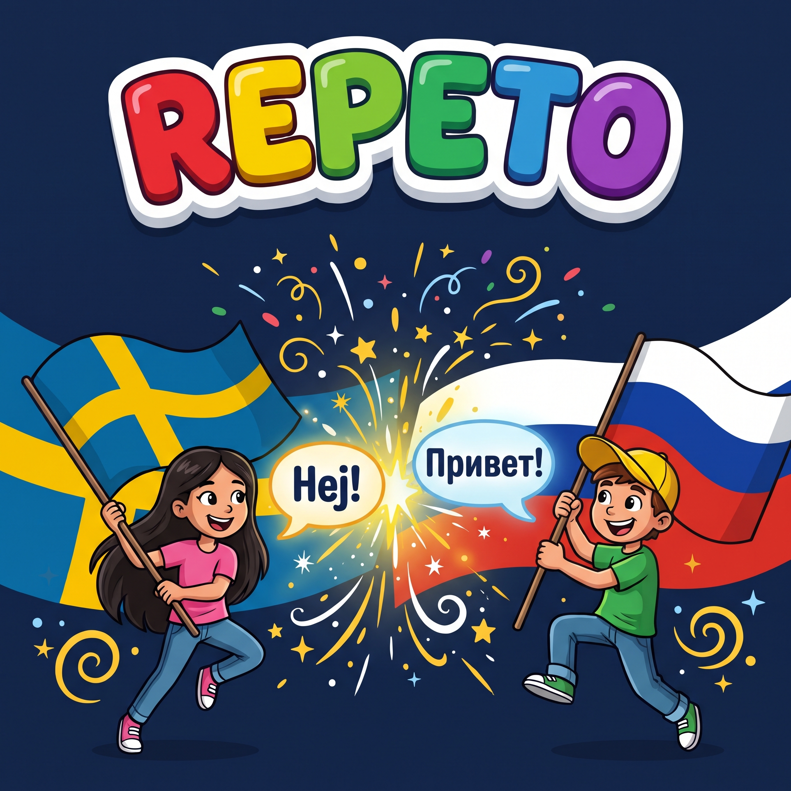

Språkkurser som podcast för svensktalande nybörjare i alla åldrar. Hör ett ord eller en mening på svenska, säg det själv på det nya språket och lyssna sedan på svaret.

Lär dig engelska genom att lyssna och prata – med svenska som stöd. Repeto är en lyssningskurs för nybörjare i alla åldrar: barn, föräldrar, mor- och farföräldrar och alla som vill komma igång med engelska. Ingen förkunskap och ingen bok behövs.

Lär dig polska genom att lyssna och prata – med svenska som stöd. Repeto är en lyssningskurs för nybörjare i alla åldrar: barn, föräldrar, mor- och farföräldrar och alla som vill komma igång med polska. Ingen förkunskap och ingen bok behövs.

Lär dig ryska genom att lyssna och prata – med svenska som stöd. Repeto är en lyssningskurs för nybörjare i alla åldrar: barn, föräldrar, mor- och farföräldrar och alla som vill komma igång med ryska. Ingen förkunskap och ingen bok behövs.